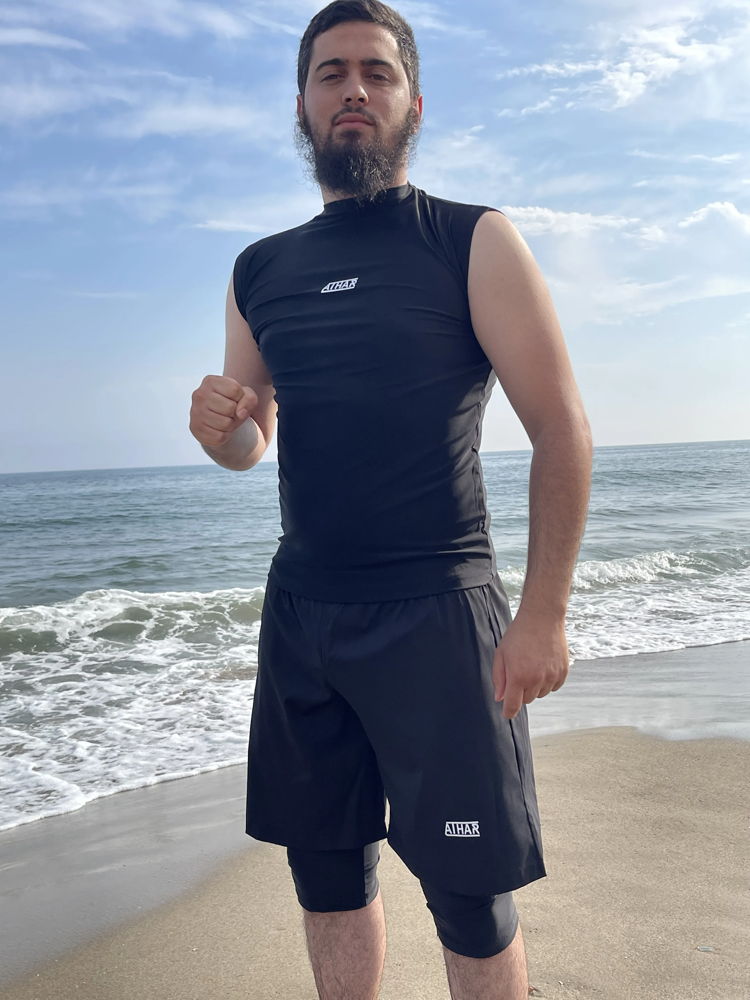
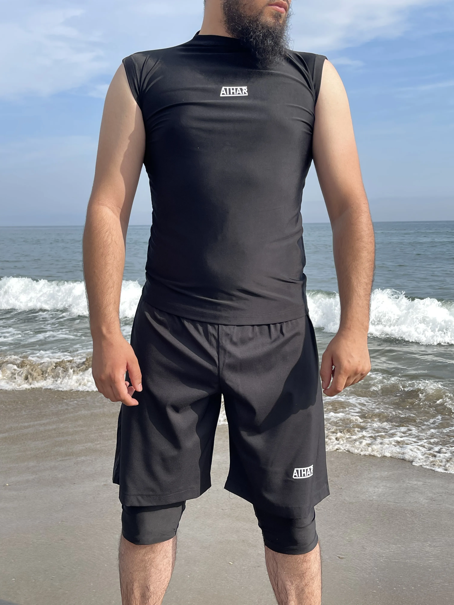
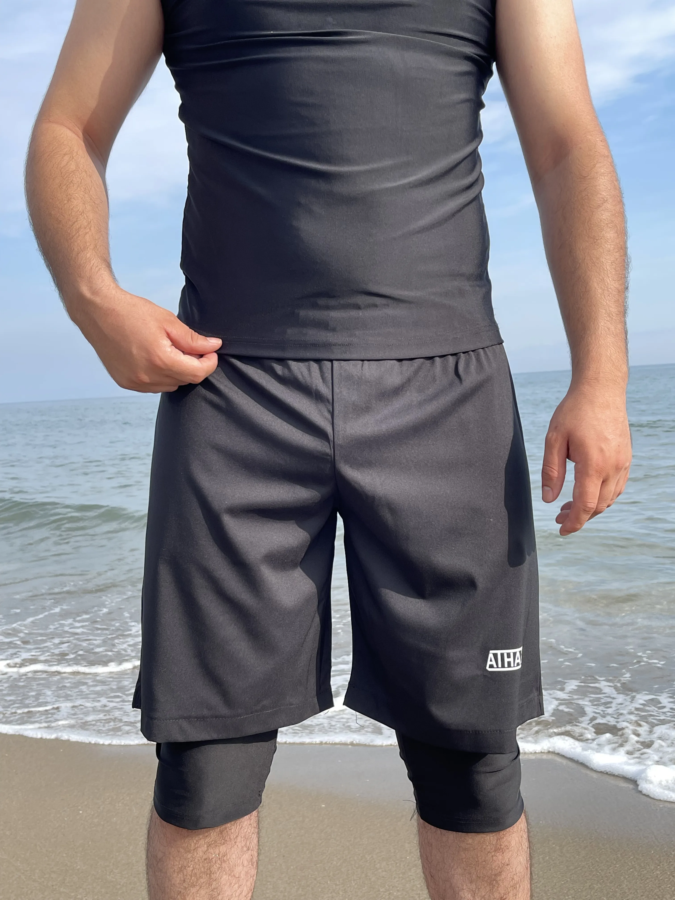
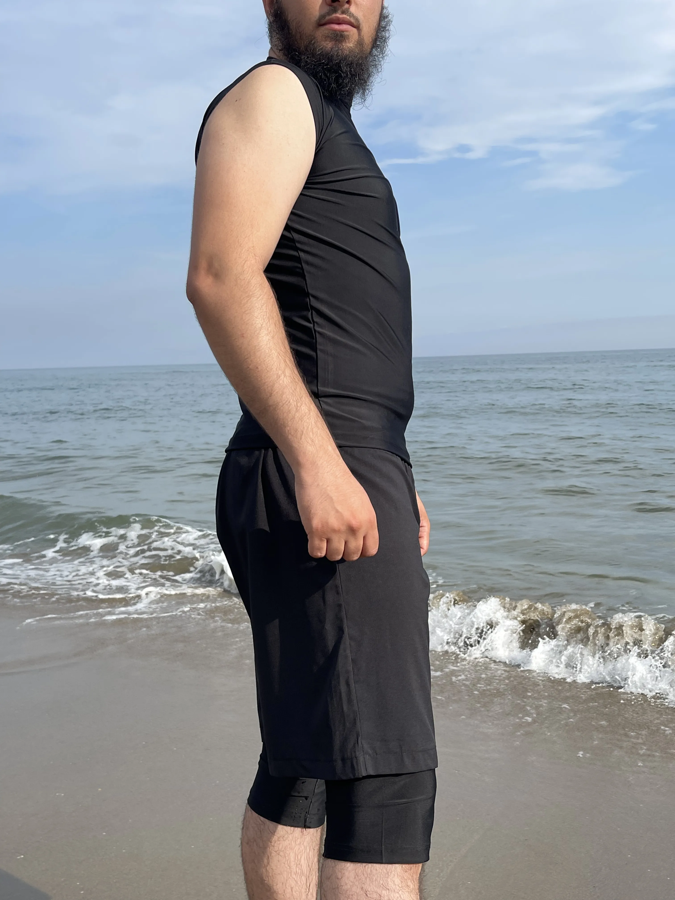
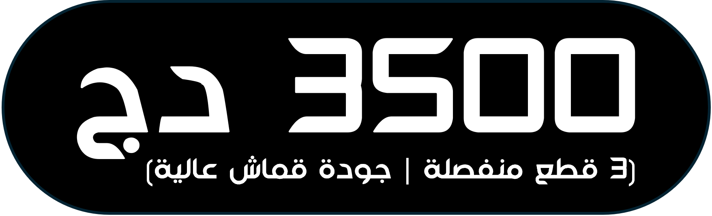

⏳ العرض محدود – اطلب الآن قبل انتهاء الوقت:
--:--:--
يرجى اختيار المقاس المناسب
الكمية المطلوبة
وصف المنتج
استمتع بالسباحة براحة وثقة مع لباس السباحة الساتر للعورة، المصمم خصيصًا للرجال الذي يجمع بين الاحتشام والأناقة.
صُنع من قماش عالي الجودة مقاوم للماء والكلور، يأتي بثلاثة قطع منفصلة ليضمن لك متانة تدوم طويلًا مع الحفاظ على راحة استثنائية أثناء السباحة.
"ساعدني بزاف حتى وأنا كبير في السن بصح لقيت فيه راحتي وعاودت كومونديت وحدة أخرى"
- عز الدين من وهران
للطلب يرجى منكم ملء معلوماتكم
توصيلنا سريع ومضمون مع شركة